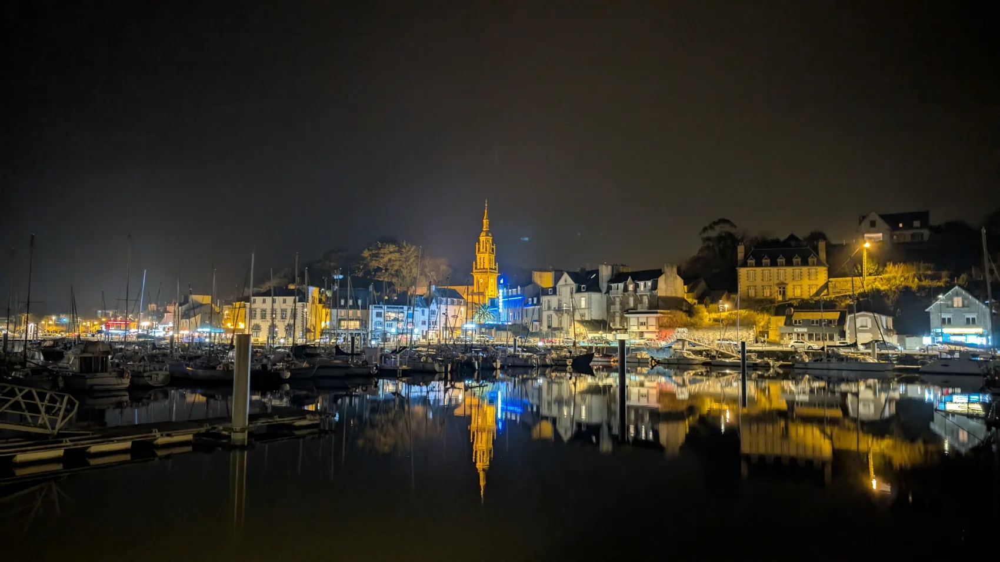

PARLONS DE VOTRE PROJETUn appel.
Un appel.
Et on prend le large.
Julien est votre interlocuteur direct. Une question rapide, un devis ou un projet particulier ? Parlons-en simplement.
LES COORDONNÉESÀ quelques
À quelques
clics du large.
Au départ de Binic et Saint-Quay-Portrieux, dans les Côtes-d'Armor.
VOTRE MESSAGE
Dites-nous ce que vous avez en tête.
Le formulaire prépare un e-mail dans votre messagerie, sans stocker vos données sur ce site de démonstration.